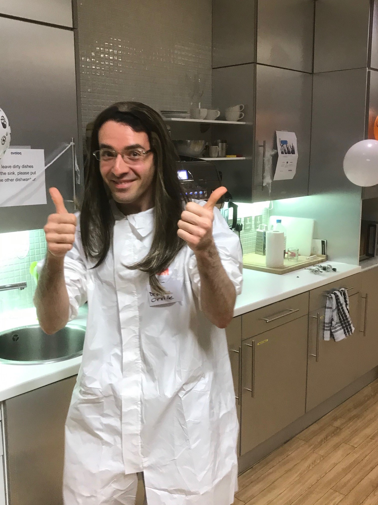

Departing from Academia
When I started my job as a Software Engineer at Avaloq in 2016, I had just decided to leave academia for good and move to what many would call a "proper" job. It's not that I wasn't caressing the idea of pursuing a career in academia, but while I was applying to those few positions available that were compatible with my PhD in Classification of C*-algebras, only to receive rejections back, the actual truth was revealed to me: I didn't really fancy going down that path. And there was, I found out, a multitude of reasons why I then decided to veer towards a completely different direction. The first signal was that, rather than being upset, in many cases I was actually happy to be rejected because, in the end, I didn't quite like either the kind of research I was signing up for, or the place I would have had to move to. Not only this, but being a researcher in that field meant years and years of relocating from place to place until, if you got that bit of luck to assist you, you got a permanent position somewhere. This is something I have witnessed through some of the people that I have met during my PhD. This, I also realised, wasn't what I was longing to go through, so yet another reason to move to a different career path that could allow me to settle somewhere and rely on a stable income. In the end, you can still do science in your own spare time and actually focus on what you really like to do, rather than what the grant is for. Of course, this is not quite like doing research in its proper environment. In fact, it's quite far from it, since the time availability is limited because of your daily job, you don't have direct access to the experts, either in person or through journal subscriptions etc..., but it's certainly not impossible to do and, in fact, I have been able to do it, as I shall tell you later on.
The Move
I have always considered software development a hobby, something that I had started doing as a kid, out of curiosity and driven by my innate desire to know how things work, and never really considered a potential career path. However, when my interests in academia started to subside, it was something that surely deserved to be reconsidered. I've always been enthusiastic about Science, and Technology in general in particular, and a role in a tech company would have certainly given me the chance to be in contact with the latest developments. Within a week of job-hunting, I landed my first role as Software Engineer at Avaloq, back in 2016. This is where I started to adjust to a brand new world.
The first thing I had to come to terms with was the stark difference between the rigour that I have got accustomed to during my PhD in Pure Mathematics, to the somewhat looser attitude on the workplace. There wasn't much attention on the technical words used in meetings, which made many things look very confusing at first, as the same concepts were referred to by different names. But after the initial "shock", things moved quite smoothly and I started enjoying what I was doing. I could make use of my honed problem solving skills and prove myself a good asset for my new team. In exchange of the excitement coming from the new challenges, I got to hone my software design and engineering skills, which have been growing in the wild with my personal experiments up to that point.
Settling In
A few weeks into my new job I came to know that somebody was organising an internal hackathon to work on some internal tooling ideas. I thought it was a good idea to join in, not only to show commitment and score points, but also because I genuinely thought it was a good chance to get to work with people from different teams learn a good deal about other aspects of the company, the product, the workflows and the tools and technologies, that I wouldn't have known otherwise. The project I decided to work on was a tool inspired by git blame for the sources hosted on the in-house source version control solution. The hackathon took place a couple of weeks later and the team I joined to work on said tool ended up winning. Not bad of a start! But the real win for me was actually achieving the goal I was hoping to achieve from the very beginning, that is, learning a good deal about the job quickly. What came out of this competition was far more than just winning a fancy nerdy t-shirt

With time, the Python glue code that I contributed for the hackathon evolved into an entire Python tooling framework that allowed me to write tools in no time to help me with my daily tasks. But perhaps more importantly, some of those tools turned out to be useful to my colleagues as well. Branching sources across different releases now took seconds rather than hours of manual, tedious and error-prone work.
The other thing that came out of this experience was that I got actively involved in promoting and organising more of these events for the office. But I will get back to this later on.
My First Project
When Doug, my only local teammate, realised that I was picking things up rather quickly, he challenged me with my very first issue only a few days into the job. By the end of the first week I had fixed my first issue. As a new joiner, I was expected to spend the first three months on "Education" and to learn about the product, the tools etc..., and certainly nobody was expecting me to be productive during that time. There is mandatory training that most of the new joiners need to go through, at the end of which there's an exam that is fundamental for passing probation. That marks the point when you're supposed to actually become useful to your teammates.
Perhaps showing all that eagerness to learn didn't play too well in my favour, because the next challenge I received was the involvement in a rather big project a few months into the role. Just kidding :). This is when I got to fly to Zurich to visit the Avaloq HQ and have planning sessions with the other teammate and the solution architect that were both based there. The task was rather ambitious: rethink the customisation API to allow the customer to write less code when supporting multiple versions or variants of certain message types, in a way that is backward-compatible with the existing implementation. The first hurdle for me was to try and make sense of all those requirements while I was still familiarising with the code-base and the tiny corner of the product I was supposed to look after. But this was a test I was not willing to fail, so I jumped right into the task and played my part for the team to deliver the final solution to the customers. A few weeks before the end of the planned working days we rolled out the enhanced API to our business teams who helped catch and fix a few minor bugs before they could get to our customers. Happy times 🎉.
Wind of Change
After about two years since I joined Avaloq, many things started to change. A new Managing Director was hired to replace the previous one who decided to move to Zurich, and brought some new ideas and a rather strong wind of change. Many things were shaken and turned upside-down, albeit some of the changes were not always well appreciated by the office. Long story short, he got fired a year or so later for not being totally in line with the people above him, and presumably also because some of that change he brought with didn't quite resonate with everybody in the office.
Personally, I think we should give the MD some credits for some of the things he campaigned for. One thing that I appreciated was the idea of introducing clans. Pick a topic, gather some people that are passionate about it and turn that passion into action to make things better for you and the people around you. This is how I got involved with the Technology and Innovation clan, to which I contributed the idea of regular internal hackathon as a way to make people from different teams have more chances to interact, break from their daily routine, learn a new skill and, more importantly, have some fun together! Other members suggested introducing a 10% time initiative, similar to what other companies do, with the aim of improving attractiveness and retention. These indeed have been the times when the office population has been the stabler; a sign that, perhaps, the clan had achieved its main goal. We've been able to run three more internal hackathons afterwards, before being forced to stop due to the pandemic. Overall, the initiative has been very successful, so much that Zurich stole the idea and organised a similar event for the whole EMEA area, before opening to external hackathons. Not being able to travel everybody to the HQ, every site has been asked to contribute a dream-team, and I was happy to be picked as one of the representatives for the Edinburgh office. That was the time when my functional manager, which was based in Zurich, took me to Fronalpstock over the weekend to give me a taste of the Swiss Alps.
From a personal perspective, the 10% initiative gave me the chance to work on the Python tooling framework that I have already mentioned earlier on, to which I also contributed many hours of my personal time. Ultimately, this turned into Sibilla, a sort of Python DAO/ORM for the Oracle databases that allows you to write queries in a Pythonic way. My Avaloq-specific tooling framework was built on top of this general abstraction layer and provided the basis for the many tools that I have built over the years to make my life easier at work. My Machine Learning tool for the classification of incoming issues was also based on this framework, but more on this other topic later.
Shipping Containers
The MD wasn't the only major change that we were experiencing around 2018. That was also the year when the Board of Architects decided that it was about time to start moving towards the world of micro-services and put bits of the product into their own containers and pods. This is one of the times when I have had some disagreement with the way we have been asked to roll out the changes for the parts that I was responsible for. Needless to say that what I'm about to tell reflects my very own opinion, to which we are all entitled :).
These days, everybody who is maintaining a monolith is made to feel ashamed of it. You either have a zoo of micro-services, or your architects should all be shown the door for manifest incompetency. This new attitude seems to have generated a rush in many tech companies to split their products in bits and put them into containers, sometimes not even knowing why or how exactly. The part I was not in line with was the decision to turn the so-called adapters (sic.), the tools that we provided to the customer to allow them to connect our product to third-party systems, into micro-services. In a sense, these tools were already containerised; being Java applications, they had their own dependencies which were shipped in their own packages. Other big sub-products looked like better candidates for "demolition" and containerisation, but after some considerations they were left out of the discussion. Because of this decision, integrating new code is still a bit of a struggle at times, since one of the many parts can still block integration testing for everybody else.
Of all the projects I have been involved with during my time at Avaloq, the containerisation initiative is perhaps the one I am the least satisfied with. Perhaps it's just a matter of taste, but the result we've got in the end didn't quite appeal to me. This does not mean that we delivered something broken to the customer. On the contrary, the adapters have never worked better, thanks also to my personal efforts to include automation testing within the scope of the project. But something with the new state of the code-base didn't quite resonate with me. Have I had the freedom to choose for a different architecture, I would have probably gone a different route. But that's that.
The Right Direction?
Something that surprised me from the very beginning was the lack of a Data Science team within the company. In 2016, Machine Learning was already quite ubiquitous, with some of the biggest achievement both in software and hardware giving very satisfactory results in many fields. As someone coming from a completely different world, I knew absolutely nothing about FinTechs, but in my head they were the prime candidate for adopting ML technologies. So while the main focus was declaring war at the monoliths, I tried starting the Data Science fire, hoping that somebody would respond to that. What I did was to use the Reading Circles to introduce myself and my colleagues (in particular those who, like me, came from a different background a didn't know much about the field) to the subject of Machine Learning and Data Science. The ultimate goal was to attract enough people to form a small group and put something together that could get somebody on a more managerial level to blow on that flame. I thought I should have led by example and so, after going through Deep Learning with Python during a full session of one of the reading circles, I had an idea: why not use all the data about customer issues to assist in opening new ones against the right team?
One problem that the Support team complained about from time to time was that some issues would be opened against the wrong team, and therefore the laid around for too long before the right people could look at them. If only they had a smart tool to help them re-assign these issues to the right team. With my newly acquired knowledge about text classification, I thought that perhaps, hidden in all the issues that have been fixed in the past, and that have then been assigned to the right team, there was a statistical signal strong enough to make a classification model work with a decent accuracy. My first experiments were based on a bi-directional LSTM models that I had to train on my work laptop as I had no access to better hardware. As a consequence, I had to pick just a small chunk of the data so that I could actually see the result of training after a reasonable amount of time. Once it became clear that there was a signal, I decided to go for a Naive Bayes approach on the full data, which was the only thing I could train with the resources at my disposal. I have enjoyed working on this project very much and for various reasons. The first is the fact that the model I was able to train turned out to produce useful classifications, and the prototype application that I ended up building on top of it proved very handy to support. Besides their emails with which they thanked me for making such a tool, I was also proud of being awarded an Extraordinary Achievement Reward, a reward that Avaloq gives to those who distinguished themselves within the company for achieving something out of the ordinary, as part of their bonus scheme. Another reason why I enjoyed this project is because it gave me the chance to investigate some ML topics more in-depth, close to research level, which takes us to the point I was making at the beginning that, even though I have left academia, I can still do research, and at my very own terms. I started investigating how the hierarchical structure of the teams within the company could have been used to increase the classification accuracy of my models, and that's how I came to know of Kiritchenko's work on the topic. The result of this investigation led me to implement a local classifier per level hierarchical classification model, but also to an interesting explanation of a phenomenon of uncertainty increase in the complement approach to Naive Bayes [1].
Secretly, I was hoping that the sort of visibility that I had gained with this project could have acted as a catalyst for establishing a proper ML team here in Edinburgh, the place that has contributed a lot to AI and still does. I created a Kaizen initiative (that's the name that was chosen for a Jira board that acts as a sort of incubator for ideas) back in March 2020, with the aim of creating a small team to focus on smart internal tooling, a way to unlock the potential of all the data actually owned by Avaloq. We had the kick-off meeting a couple of months before my departure and I do really hope that things can take off. I would regard that as some sort of legacy of my time spent there. The conditions, however, didn't quite seem to be there, and this is also one of the reasons that, in the end, led me to take the decision to move on with my life.
Social Life
One great thing that I am surely going to miss of Avaloq is the absolutely fantastic atmosphere of the social events. The office in general, on a normal day, has that really good vibe that I think it's rare to find. I have had the chance to work with really nice people from the moment I stepped in until the very last day. The local team I was part of has been like a family to me. I like cue sports and the fact that we had a pool table in the office allowed me to combine my passion with social activities to promote a nice and relaxed atmosphere. I will surely miss those few games of pool after lunch with some of my former colleagues.
I have organised pool events of all sorts to bring people from different teams together, have a laugh at the table and enjoy a wee break from work. We have had fairly regular social seasonal and team events throughout the years, each one with a theme, Xmas events etc.... This is what happened at the Halloween event that I have helped co-organise together with the rest of my local team

No doubt I am going to miss all of this, especially now that my next role is remote. Surely I can find a co-working space where I can re-create some sort of office experience, but it won't be like being in the office with the rest of the team. However, on the plus side, I discovered that working from home has its pros too. Even though Avaloq offers great flexibility in terms of remote working, I have always preferred going to the office for that atmosphere that I just mentioned, and I thought I could never work remotely. Of course the pandemic forced all of us inside, so that I was coerced into experiencing working from home on the long term. I guess, like many other things in life, you can get used to it, and indeed so I did. So never say never in life. Perhaps in the future I'll be able to sneak in to a board games night at the old office :).
Gabrexit
It's only when I was getting towards the end of my notice period that I have started realising the extent of my contributions at Avaloq. I am generally a modest person and I don't like to brag about my achievements, but I think it's important that I try to look back at all the work that I have done and give myself a pat on my shoulder for each good thing that I have done. I have already mentioned the Python tooling framework. My manager asked me to find a new caretaker of those projects before I left. A colleague of mine helped me migrate the original code-base from Python 2 to Python 3 and so he was the perfect candidate to take over. This is another thing that never flew as high as I'd hoped, mostly because Python is not one of the "official" technologies adopted at Avaloq. However, many people started relying on some of the tools that I wrote, so it only makes sense to ensure that somebody can keep looking after them once I'm gone.
The other hand-over meeting that I was asked to attend was about the ML project for the classification of issues. As I said, some people liked the idea, and the prototype, very much, especially those that were in charge of designing the new customer support portal. They asked me to go briefly over the general architecture so that they can continue working on it and take the project into production, so that the customers also can start benefiting from recommended teams to assign the issue to as they type the problem description in the portal.
Lastly, I have had a chat with the head of the technical writers. I had mentioned to the previous head that I had a prototype for a post-processing tool that could have simplified they way they keep the documentation in sync with some of the latest development on the main product. So I have also had a meeting to hand that prototype over to the tech writers team.
Thus, as I was getting closer to my last day at Avaloq, I started realising that my contributions, in the end, went beyond the confines of my team, but spanned areas that were quite orthogonal to my duties of Software Engineer for the messaging part of the product, going from customer support to documentation. And if the Kaizen initiative does take off, that would be yet another seed that I would have planted and that would hopefully bear my name for me to be remembered as somebody who didn't just play pool all the time, but that also did at least a few good things for the company.
References
[1] Gabriele N. Tornetta, Entropy methods for the confidence assessment of probabilistic classification models, submitted to Statistica, 2020.